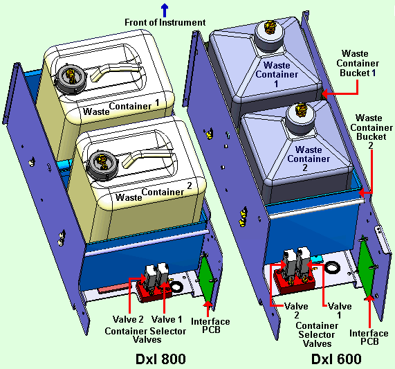
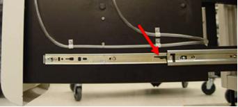
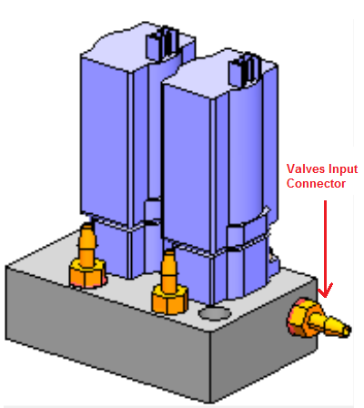

DxI Fluidics: Installing Liquid Waste Drawer
Purpose
This procedure describes how to install the Liquid Waste Drawer.
When to Perform:
- Replacing the existing Liquid Waste Drawer.
- Replacing the Empty Drawer or external drain with the Liquid Waste Drawer.
Caution: Use proper PPE when performing this procedure.
Important: The Liquid Waste Drawer Kit does not contain the door cover. The cover must be removed from instrument and installed onto the drawer kit.

-
Remove the external drain (if applicable).

- Remove the drain fitting protective bracket to access the drain tubing.
- Disconnect the drain tubing from drain fitting.
- Remove all the screws on the lower right rear panel and remove the panel from the instrument.
Caution: Handle the panel with care so that the Liquid Waste output tubing is not damaged.
- Disconnect the Liquid Waste output tubing from the drain fitting attached to the inside of the panel.
- Route the tubing through the chain to the front of the Liquid Waste Drawer area.
-
Install the Liquid Waste Drawer.
Note:
- Inspect the drawer kit and confirm all components are present.
- Confirm all tubing is correctly connected to the Selector Valves.
- Remove the Bulk Fluid Tray Interface PCB cover to access the PCB.
- Confirm all valve connectors and weight sensor connectors are correctly connected to the Bulk Fluid Tray Interface PCB (see image for references).

- Perform these steps for DxI instrument serial numbers 608619 and 902127 and above.
Proceed to the next substep for DxI serial numbers below 608619 and 902127.
- Remove the slide rails (2) from the drawer kit and push on the tab to separate the inner rail from the outer rail.

- Attach both outer rails to the instrument baseplate using 6 screws from the drawer kit for each rail.
- Remove the slide rails (2) from the drawer kit and push on the tab to separate the inner rail from the outer rail.
- Remove the Liquid Waste containers from the drawer and set them to the side.
- Attach the inner slide rails to each side of the liquid waste drawer using 3 screws from the kit for each rail.
Note:
- Both rails have a fixed screw hole toward the front and two adjustable screw holes toward the rear side.
- Install the screw to the fixed hole first and do not tighten the screw until the other screws are aligned and installed. The rails must be pushed up to align the screws on the adjustable holes to the screw on the fixed hole.
- Install the drawer cover to the drawer using 4 screws from the kit or reuse the screws from the removal of the existing cover from the instrument.
- Install the drawer by aligning the inner rails into the outer rails and push the drawer in.
- Connect the serial cable from the instrument to J1 connection on the Bulk Fluid Tray Interface PCB.
- Re-install the Bulk Fluid Tray Interface PCB cover.
- Verify the Liquid Waste output tubing is routed through the chain and connect the tubing to the Selector Valves input connector. Remove any clamps on the tubing (if applicable).

- Attach the chain to the drawer using screws (2) from the kit or re-use the screws that previously attached the chain to the drawer.
- Attach the ground cable to the drawer using the star washer and screw. Cable is attached to the inner side of the drawer where paint has been stripped from the hole.
- Insert the Liquid Waste containers into the drawer.
- Connect the Liquid Waste quick tube-connectors to the fittings on the containers.